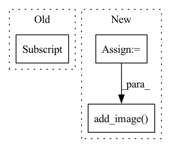

Pattern ID :2225

Before Change
pl_module.eval()
out = pl_module(text, x, return_loss=False).long()
text_seq = out[:, :self.text_seq_len]
img_seq = out[:, -self.image_seq_len:]
xrec = pl_module.vae.decode(img_seq, feed_seq=True)
pl_module.train()
After Change
trainer.logger.experiment.add_image(x_title, x_grid, global_step=trainer.global_step)
xrec_title = "val/reconstruction"
trainer.logger.experiment.add_image(xrec_title, xrec_grid, global_step=trainer.global_step)
xgen_title = "val/generation"
trainer.logger.experiment.add_image(xgen_title, xgen_grid, global_step=trainer.global_step)
In pattern: SUPERPATTERN
Frequency: 3
Non-data size: 3
Instances
Fragment ID: 9530961
Project Name: tgisaturday/dalle-lightning
Commit Name: 2581c994940a3ccb5d297681ac847d543a1a82bd
Time: 2021-07-26
Author: jamesk1228@gmail.com
File Name: pl_dalle/callbacks.py
M Class Name: DalleImageSampler
N Class Name: DalleImageSampler
M Method Name: on_validation_batch_end(7)
N Method Name: on_validation_batch_end(7)
M Parent Class: Callback
N Parent Class: Callback
M File Name: pl_dalle/callbacks.py
N File Name: pl_dalle/callbacks.py
M Start Line: 263
M End Line: 270
N Start Line: 276
N End Line: 331
'>
Before Change
return ([optimizer], [scheduler])
def training_step(self, train_batch, batch_idx):
x, y = train_batch["x"], train_batch["y"]
preds = self(x)
loss = F.cross_entropy(preds, y)
// loss.requires_grad = True
After Change
loss = self.criterion(preds, y)
lr_saved = self.trainer.optimizers[0].param_groups[-1]["lr"]
lr_saved = torch.scalar_tensor(lr_saved).cuda()
final_image = self.create_video(x, preds, y)
// plt.plot(final_image)
// plt.show()
// plt.savefig(f"./{batch_idx}_im.jpg")
self.logger.experiment.add_image(
"epoch_" + str(self.current_epoch) + "_step" + str(self.global_step) + "_generated_images",
final_image, 0)
plt.close()
self.log("train_loss", loss)
self.log("lr_saved", self.learning_rate)
'>
Fragment ID: 9530960
Project Name: subhadityamukherjee/pytorchtutorialrepo
Commit Name: b6d74a2a1f63dc457b6722982e312f7bffff1195
Time: 2021-02-14
Author: msubhaditya@gmail.com
File Name: applications/videoPrediction/WIPvideoPred.py
M Class Name: LitModel
N Class Name: LitModel
M Method Name: training_step(3)
N Method Name: training_step(3)
M Parent Class: pl.LightningModule
N Parent Class: pl.LightningModule
M File Name: applications/videoPrediction/WIPvideoPred.py
N File Name: applications/videoPrediction/WIPvideoPred.py
M Start Line: 221
M End Line: 227
N Start Line: 290
N End Line: 309
'>
Before Change
pl_module.eval()
out = pl_module(text, x, return_loss=False).long()
print(out.shape)
text_seq = out[:, :self.text_seq_len,:]
print(text_seq.shape)
img_seq = out[:, self.text_seq_len:,:]
print(img_seq.shape)
xrec = pl_module.vae.decode(img_seq, feed_seq=True)
After Change
trainer.logger.experiment.add_image(x_title, x_grid, global_step=trainer.global_step)
xrec_title = "train/reconstruction"
trainer.logger.experiment.add_image(xrec_title, xrec_grid, global_step=trainer.global_step)
xgen_title = "train/generation"
trainer.logger.experiment.add_image(xgen_title, xgen_grid, global_step=trainer.global_step)
@rank_zero_only
def on_validation_batch_end(
self,
'>
Fragment ID: 9530952
Project Name: tgisaturday/dalle-lightning
Commit Name: 2581c994940a3ccb5d297681ac847d543a1a82bd
Time: 2021-07-26
Author: jamesk1228@gmail.com
File Name: pl_dalle/callbacks.py
M Class Name: DalleImageSampler
N Class Name: DalleImageSampler
M Method Name: on_train_batch_end(7)
N Method Name: on_train_batch_end(7)
M Parent Class: Callback
N Parent Class: Callback
M File Name: pl_dalle/callbacks.py
N File Name: pl_dalle/callbacks.py
M Start Line: 206
M End Line: 216
N Start Line: 206
N End Line: 261